How to make KiSS DVD Player Region Free
(RPC-1)
Written by Hijacker
Last page update: 07. March 2006
Index:
o
News
o
Download
o
About this page
o
Intro
o
What will you need to make it region free
o
Step by step instructions
o
Possible problems
o
Conculsion
o
Credits
o
Donations
News:
- 07.03.2006
Got an email with a poor dad whos kid crashed the tray in DVD unit inside the KiSS so he bought a new M1912 model. He asked me for firmware. Didn't know it exists for it, but was I wrong. Found it shortly after and by my suprise it's already region free (RPC-1). I've posted it here and on my new Toshiba firmwares page here. So far it can be only flashed externaly. I don't know of a way to flash this inside the drive... yet. And it seems to be newer one then 1K00 originaly inside M1912 drives.
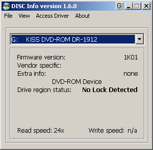
- 09.02.2006
I've checked what was all the fuzz about the 1K02, 1K03 and 1SLW firmware for 1802. The 1SLW and 1K03 firmwares are both the same only name is changed. I had to do that back then when I first released it. But now it doesn't matter anymore. So you can also download original 1K03 firmware and it's patched RPC1 firmware. But the big bang is that I beleive 1K02 is the latest firmware for Toshiba SD-M1802 judging by the date inside firmware. If anyone can prove diffrent I'll leave it here as the latest. So the ISO files you can download for the internal flashing of Toshiba drive contain the 1K02 firmware.
Another big thing is that I have patched a latest KS00 firmware for Toshiba SD-M2012C drives that KiSS will probably start shiping soon in their components. You can find it under downloads. As far as I know internal flashing of this drives is NOT yet possible. But you can download it and flash from windows.
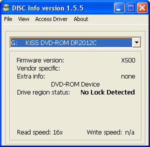
When I get some more info on this I'll make sure to post it ASAP.
- 19.01.2006
Wow. Has it realy been two years since last update. Time to check what's new. A lot of new models from KiSS came out. I am currently a proud owner of KiSS DP-558 that I got last year. Very happy with it despite all the bad reports. Works excelent here for me and it can still be made region free. I also still have DP-500 model who works like new and it's used daily by my father to look at his favourite TV shows ;).
The main reason for this update is that I managed to find new firmware for Toshiba SD-M1802. All I know about it is that it's speed reduced and plays copy protected audio CDs. Can't test it but I've made it region free and avaible here to download. I've updated the ISO files also, so download, burn to CD and put inside component. The procedure is the same.
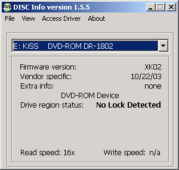
I'd also like to point out a web page made my Hi-Jack (not related to me :o))
this URL called
MPClub. It's a great source for all the info about KiSS models and a good chance to talk with fellow KiSS users to discuss and solve problems relating KiSS components.
- 28.01.2003
Well. I think it's about time I update this page and give my inbox a well deserved rest. As you definetly noticed KiSS released a new firmware version 2.8.0 wich is the latest on on today. It has a bug. The part that flashes the internal Toshiba drive DOESN'T WORK, meaning Method 1 will NOT work anymore. The most simple solution is to flash component with 2.7.4 firmware and then insert the region free ISO CD to flash the Toshiba properly. You can then flash back to 2.8.0 if you really really want it :).
As some of you already know, the KiSS company puts latest Toshiba drives inside models SD-M1802 for wich there is no region free firmware available. Well. Until today :o). Under download you can find the XLSW region free firmware for the latest M1802 models. Method 1 of the flashing isn't working yet for this drives so if you want to flash your drive with it, you will have to take the Toshiba outside the component and flash it from PC under DOS (method 2). But I hope this will soon change. Therefore I've also updated the ISO files wich now include all the KiSS Toshiba firmwares. The ISO CD doesn't work with firmware 2.8.0 but in the future it might work. I'll post the new when this is possible.
- 04.09.2003
I got tons of emails about people who read the instructions and are still clueless what they have to do. Here is the explanation. TWO diffrent terms to remember first.
1. KiSS firmware: This is the firmware that KiSS company releases every once in a while wich upgrades the FLASH chip inside the component. It contains bug fixed and extra stuff they added in this time. KiSS guys are so good that they added some cool and hidden feautures inside it that helps us make the component region free. This firmware has NOTHING to do with Toshiba firmware.
2. Toshiba firmware: KiSS component has inside a TOSHIBA DVD-ROM drive, wich is exactly the same as the one you can buy in stores and put into you desktop PCs (models SD-M1612 and SD-M1712), except for the internal firmware wich is made specialy for KiSS. This drives when bought are region protected (RPC-2) wich means that they have a counter inside them wich counts how many times a user has changed the diffrented region protected movies. IN ORDER TO MAKE THE COMPONENT ENTIRELY REGION FREE, THE TOSHIBA DRIVE HAS TO BECOME REGION FREE! IF IT'S NOT YOU WILL NOT BE ABLE TO SELECT THE REGION SETTINGS FROM THE HIDDEN MENU. There are two ways how to do that. One is by flashing Toshiba drive internaly with my patched Toshiba firmware and the other one is to flash it externaly in PC. Of course the suggested procedure is the internal flashing since you don't need to open the component at all. SO USE IT!
Another thing I got a lot of emails about is where to find the ISO file. Of course it's under downloads and it's ZIPED. Yes. You can even ZIP an ISO file :/. Why? To save bandwidth! Enough sarcasm... I've redone the download text so now EVERYONE should be able to understand what to do.
When burning the ISO file FINALIZE THE CD AND BURN WITH DISC-AT-ONCE METHOD!!!!!!!!!!!!!!!!!!!!! AND POWER OFF THE COMPONENT AFTER INTERNAL METHOD 1 FLASHING!
And please, please, please, please, please, please read the instructions carefully!
- 12.08.2003
New firmware 2.7.0 was released. This one is now able to internaly flash the Toshiba SD-M1712 AND Toshiba SD-M1612 drive inside the component. Meaning? No more opening the component so that you could take out the Toshiba DVD drive and put it inside the PC to flash. I've still left the old instructions on how to flash externaly if anyone needs it. But if you have firmware 2.7.0 or newer then you can make your drive region free the new way. I've taken some screenshot of the whole process so it can be as much clear as possible.
- 22.07.2003
The KiSS user forums have moved to a this new address. Feel free to visit it for any info you seek about your KiSS component.
- 11.07.2003
A lot of new firmwares were released since last page update. The latest one is 2.6.8 who has support for DivX 3.11. You can still make you component region free by using the method mentioned on this page or you can try the new method of flashing Toshiba drive directly inside the component without opening it. You can find the instructions on how to do that on the KiSS DVD Forum. This so far only works for components who has a Toshiba SD-M1712 drive inside. There are three revisions of 1612 drive and it looks like KiSS doesn't know how to identify them.
- 11.03.2003
KiSS released new firmware for DP-450 version 2.6.3. You can get it on their web page. Got some emails saying this one works fine for region changing. Here is a snap from an email I got from Giorgio Ungarelli:
My internal Toshiba drive is flashed to RPC-1. I had kept the version of the DP-450 to 2.6.0 as that allowed me to watch RCE coded region 1 DVDs (hidden menu via "open - clear - 2 - 7 - 6 - enter" to change the region code) whereas 2.6.1 did not store this new region code.
With 2.6.3, the hidden menu still works and if I change the region from All to 1 (without powering off the DP-450) and insert an RCE coded region 1 DVD, it plays!
So I advise you to update. Looks like the have fixed the bug when 2.6.1 firmware didn't save region setting. My inbox is still full of people asking me for this and that about KiSS. I don't know much about it and I don't have the time to reply to all of them so I made a topic inside the firmware forum. Post all the question and problem in this topic here. So basicly help each other out.
- 02.03.2003
I am back and have some updates. Got some reports that firmware 2.6.0 for KiSS doesn't have the hidden menu disabled. Since 2.5.1 has more bugs that this latest one I've replace the link to 2.6.0 firmware.
I've also got information how you can eject the Toshiba drive if it's stuck and can't open due to the bad CD inside it or bad flashing. Instructions are under possible problems section.
Another new page translation done by Piotr Cierniak into Polish language. You can check his page here.
Since I don't have the time to answer all the emails you guys send to me about KiSS I'll just asnwer them all here since the answer is allways the same. I will NEVER patch/hack/modify KiSS component firmware to enable/disable 3.11/macrovison/scart or any other stuff you all want this component to have, but it doesn't. I have NO contact with KiSS or Toshiba whatsoever and I don't know when/if they will add this/that feature in the component. Please stop emailing me with questions like that. All I know is written on this page.
- 25.01.2003
Latest news! In 2.6.1 firmware any value you choose from the hidden menu for the region doesn't get saved inside the drive. This is now the fact... Only way to make it change the region is to download old 2.5.1 firmware where this worked fine just as I wrote about yesterday. Do this:
- unlock Toshiba drive as usual
- do a FULL UPDATE of a firmware version 2.5.1
- set region to ALL
- do a PARTIAL UPDATE of a latest firmware
It's reported working... Read possible problems section on what if flashing component goes bad.
- 24.01.2003
Hmm... Looks like KiSS disabled the functionality of the hidden menu. Some users reported that if you flash to 2.6.1 or even 2.6.0 firmware you can not change the region to ALL in the hidden menu. I had a 2.5.1 firmware installed original on my component. I could change it to ALL. I've flashed to 2.6.1 today and the hidden menu was also there and it was set to ALL, but if I changed it to lets say region two it didn't save it inside the device.
What now? Well. The most obvious reason would be to update the component with old 2.5.1 firmware and select region to ALL there. Then flash back to latest 2.6.1 and hope it works... Actualy. I allready got two reports that this works fine. But I also got one report that flashing to 2.5.1 caused his component to crash. It just says KiSS DVD on the display and does nothing... I am not sure if he just had bad luck but I will keep you posted how it turns out... You can download 2.5.1 firmware from download section. If anyone will try this please email me with the results so that I will be able to share the info with others.
- 20.01.2003
Well. It looks like Santa only got lost and he didn't really forget about me ;o). Today I have received my very own KiSS component. As promised I have taken the shots with digital camera the whole time I was unlocking it. Now there should be no problems unlocking the drive. All images are clickable to show bigger, more clear image.
I've also remove all the text about the Toshiba Revision Check program. I hightly updated that program and made it general for all DVD devices. Now it's called DISCInfo.
Note the new address for this page: https://kiss.rpc1.org. Old one still works but this one is shorter and easier to remember d:o). If you have any comments you can always email me.
- 31.12.2002
Looks like I was a bad boy this year and Santa did not bring me my own KiSS component. Just few weeks ago I helped an old woman cross the road but it looks like I was too late with making good deeds. Oh well... Maybe next year ;).
Dennis M. Jensen traslated my instructions on how to unlock KiSS component into Dannish language. You can all visit his page on this address.
Other than that nothing new happened since my last update of this page. KiSS components are becoming more and more popular. I still get a lot of thank you email from user wich my instructions helped to unlock their component. But on the other hand, I also get lot of emails asking me stuff I know nothing about like "Why doesn't my component read 3.11 DivX movies". I have no idea. Please stop emailing me with questions like that.
Hjacker wishes you a HAPPY NEW YEAR 2003 {:o).
- 09.12.2002
Checked the statistics for my page. Damn! This KiSS drives are geting really popular. Lots of users visited this page. It bothers me that some of them are charging lot of money to unlock the drive and then sell them forward to customers. I do not support this!!! Everyone can make his drive region free without paying any extra money. Do not fool yourself to this kind of offers!
I also do not tolerate offsite linking. If you want to share the information how to unlock the drive on your page, just link to this page or at least ask for my permition. If this continues I will publish URL address from the ones that offsite link this page.
Also plan to get myself a KiSS drive. Then I will be able to make some shots with digital camera and even better show how to flash Toshiba drive.
Some users reported that they get an malloc error when they run the update.bat. I updated the instructions what to do if you get this error.
Got news that newer KiSS model DP-500 will also have Toshiba drives inside so this trick should work also for it.
Another warning for PC users! This firmwares are specialy written and not for PCDVD users! the speed is reduced and do not email me if you flashed your 1712 drives with this firmware and noticed it reads data too slow.
Added the donation part. If you find the informations on this page usefull, you can say thank you by donating a € or two to help our server alive.
- 04.12.2002
Released the firmware files and wrote the instructions on how to make it region free.
Download:
ALL FIRMWARES ARE SPEED REDUCED!
Max read speed of plain CDs is 16x and max DVD read speed is set to 2x!
PCDVD USERS, DO NOT FLASH YOUR TOSHIBA DRIVES WITH THIS FIRMWARES!
ISO FILES FOR METHOD 1 FLASHING (FOR ALL TOSHIBA MODELS!!! UNZIP IT!!!)
- KiSS/Toshiba SD-M1612 RevA, RevB, RevC and SD-M1712 (BIN files) ISO firmware:
o
Original 1K0X firmwares (RPC-2)
o
Patched XK00 firmwares (RPC-1) <- THIS IS THE ONE YOU MOST LIKELY NEED, REGION FREE
INDUVIDUAL FILES FOR METHOD 2 FLASHING
- KiSS DR-1612 RevA (Toshiba SD-M1612 RevA):
o
Original 1K00 firmware (RPC-2)
o
Patched XK00 firmware (RPC-1)
- KiSS DR-1612 RevB (Toshiba SD-M1612 RevB):
o
Original 1K00 firmware (RPC-2)
o
Patched XK00 firmware (RPC-1)
- KiSS DR-1612 RevC (Toshiba SD-M1612 RevC):
o
Original 1K00 firmware (RPC-2)
o
Patched XK00 firmware (RPC-1)
- KiSS DR-1712 (Toshiba SD-M1712):
o
Original 1K02 firmware (RPC-2)
o
Patched XK02 firmware (RPC-1)
- Toshiba ODD-DVD SD-M1802:
o
Original 1K02 firmware (RPC-2) * LATEST *
o
Patched XK02 firmware (RPC-1) * LATEST *
o
Original 1K03 firmware (RPC-2)
o
Patched XK03 firmware (RPC-1)
- Toshiba SD-M1912:
o
Original 1K01 firmware (RPC-1 by default)
- KiSS DR-2012C (Toshiba SD-M2012C/TSSTcorp TS-H352C):
o
Original KS00 firmware (RPC-2)
o
Patched XS00 firmware (RPC-1)
- Necessery utils:
o
DISCInfo
o
ASPI layer drives 4.60 Win9x/Me/2k/XP
- Links
o
KiSS-Techology Homepage
o
MPC Club
o
Goodstuffdvd.com KiSS forum
About this page:
I want to get some things clear. This page was made because I got so many requests from users that bought KiSS DVD DP-450 and that they want it region free. I never wanted to have anything with patching the standalone components! But with KiSS player it's diffrent story since the DVD drive inside it is a plain IDE PCDVD Toshiba drive. And since I started patching the Toshiba drives I thought why not try to patch the ones in the KiSS player. Read the whole page before you start doing anything with you KiSS player! I will explain in details how to make your KiSS player region free and with it alowing you to view DVD movies regardles of what region they are.
Intro:
I will try to explain first what exactly will we be doing. KiSS player has a plain IDE PCDVD Toshiba drive inside it. There are two models of Toshiba drives they put inside. One is Toshiba SD-M1612 and one is the latest model Toshiba SD-M1712. There isn't that much of a diffrence between this two drives so it doesn't matter wich one you have. Both are very good and reliable drives
But there is also something special about SD-M1612 model. There are three diffrent versions of it. We call this that the drive has diffrent hardware revision. For every diffrent hardware revision the drive has it's own firmware. You can't flash your drive with firmware from revA 1612 to your revB drive and other way around.
There is also one very important thing. If you do know yet the Toshiba drives are RPC-2, wich means that they have internal region protection. Inside is a counter that at first is set to 5. When you put a region protected movie inside the counter decresses to 4 and stays at 4 until you put a diffrent region movie inside the drive again. When it hits 0 the drive gets permanently locked. But if you know what our
main page is all about you know that we tend to disable this region protection.
What does this mean for KiSS players you ask? Simple. If the software identifies that the drive is RPC-2 it will not allow playing other region movies then the one that is preset. So the main goal would be to make the drive become RPC-1. The only way to do it is by patching the firmware for this Toshiba drives to become region free.
What will you need to make it region free:
o
Screwdriver - A (+) screwdriver. I think it's called Philips screwdriver. No idea why...
o
PC - Yes a personal computer is neceserry. You will need to flash the Toshiba drive outside the component.
o
My modified firmware files for the KiSS drives - check download section
o
Some extra utilities to read the drives info - also in download section
Step by step instructions:
o Method 1 (internal flashing of Toshiba - RECOMMENDED):
First of all you need to make sure that your firmware is 2.7.0 or newer. You can check that by pressing the Setup key on the remote control.
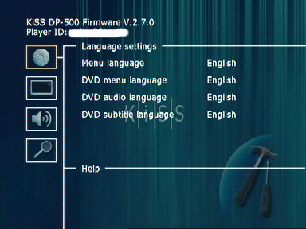
In order to DVD work properly you need to have at least one DVD played. That way the DVD region will decress and get set to the region the DVD is from. Just put a regioned DVD inside and play it at least once. Next step is to download the patched firmwares in BIN format. To make it easy I've made
practical ISO file (unzip this files first). Just burn it. Make sure you
finalize the CD and burn as
Disc-At-Once. You can use any software you want. Here is an example from Nero.
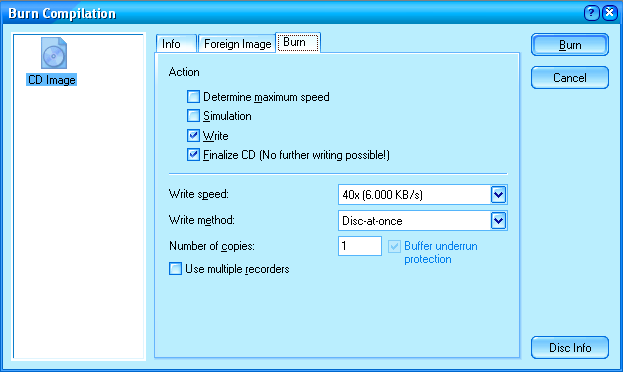
When CD is burned you simply insert it into component. It doesn't matter wich Toshiba drive you have (1612(a, b, c) or 1712) because all the firmwares are allready burned on the CD and the software will choose the correct one. When you insert the CD you see something like this:
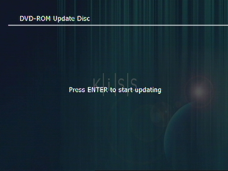
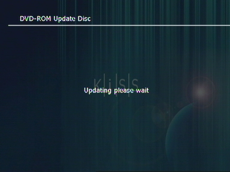
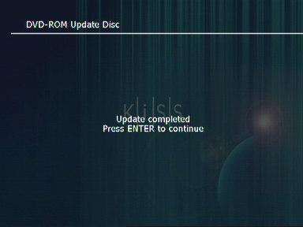
That's all. The drive has now been flashed with region free firmware who made the Toshiba region free. Power off and power back on the component. Now you have to unlock the component. Do this by pressing
EJECT - CLEAR - 2 - 7 - 6 - ENTER. You will see a menu like this:
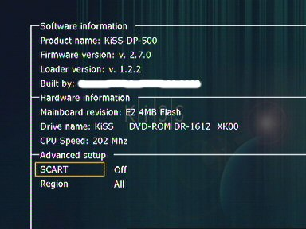
Select region setting and choose ALL.
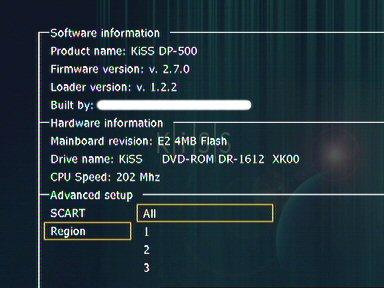
The component is now fully region free!
o Method 2 (external flashing of Toshiba):
No that I have the component I can finaly show you with images what to do... Clean your glasses and watch:
1./ Before we start doing anything we need to set the region inside the drive itself. There are two options to do this. First one is just to play a region protected movie (region 1-8) while Toshiba is still inside the KiSS drive and let it play. If you have them try to play more than only one movie with diffrent region. Ignore the error you get. The other menthod is to set the region when the drive is connected to PC. I will explain this later.
2./ Opening the KiSS component. Since the main point is removing the Toshiba lets start with preparation. Toshiba has a front tray cover. In order to remove the drive we will need to remove the cover. What I did was that I first pluged the component on and pressed eject button so that the tray got opened. Then I shut it down so that component was off but the tray was still opened.
Then pull the power cord out of the socket!!! Now lets remove the tray cover from the Toshiba drive. It comes off easily with gentle push to the top. Then lets remove the top black cover. You have two screws on each side and three of them on the back (black color). You can't miss anything here. Next comes the hard part. Geting the Toshiba out.
First disconnect IDE and the Power cable (Image 1). Gently!
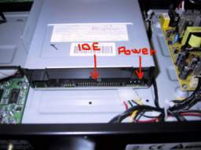
Image 1
You have two screws on each side (Image 2 and Image 3)
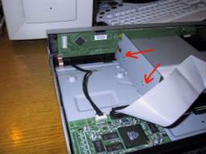
Image 2
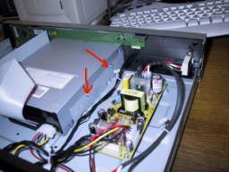
Image 3
and four on the bottom (Image 4).
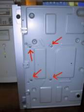
Image 4
After you remove all of them the Toshiba drive should be loose. The metal plates that was connected on the sides will be now loose. Remember their position. I think they are used to levitate the Toshiba drive in air so that it doesn't touch the bottom metal.
3./ Take Toshiba drive out. Watch out for the tray wich is still opened! Do not force close it yourself. It will close on its own when you turn the computer on. On the bottom there is a sticker saying wich model do you have. There are three versions of 1612 model and I will teach you later how to find out wich one exactly do you have.
4./ Plug the drive into you PC on plain IDE cable. Make sure you check the Master/Slave jumper on the back of the drive to plug it correctly if you allready have someting connected to the drive. Toshiba drive as default is set to Master. There is a jumper in the back and a nice image on the drive if you need to change to slave. Just make sure you put it back to master after the flash. Lets now plug it to the PC. This is how you should not do it :o) (Image 5).
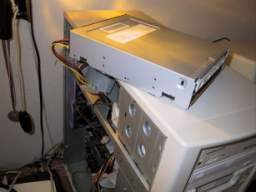
Image 4
I leave it to you how you will connect it. As long as it works and computer recognises it.
5./ When you start the computer the drive will not get recognised as Toshiba drive but as KiSS drive. It doesn't matter. Just the name in the firmware was changed so ignore it. You could go and start flashing right away but first I would advise to go and make sure that the counter is not 5 and that the region is set. Boot to windows.
6./ To check your drives info use the program called DISCInfo. Also use my program to check what drive exactly you have. Remember that there are three possible hardware revisions of SD-M1612 model. For 1712 it's only one version. Every hardware revision has its own firmware.
If program doesn't want to start install ASPI layer drivers. All files avaible under downloads.
When run it should look something like this:
| 1. RPC-2 region NOT set: |
2. RPC-2 region IS set: |
3. RPC-1 after the flash: |
| 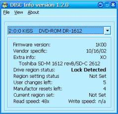 |
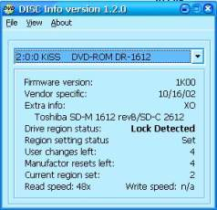 |
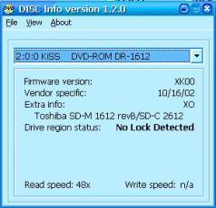 |
The first image (1.) shows that you have a completly fresh drive on wich no movie was played before. This is no good for us. The counter has to be lower that 5 and the drive has to have a region set.
The second image (2.) shows that the drive allready played a region 2 DVD movie and this is also the curently set region. It doesn't matter to wich region the drive is set. What is important is that the counter is
NOT 5 and that the drive
HAS a region set. If you want to set a region just play a movie under windows. You can use Windows Media Player or other software like PowerDVD, WinDVD,... If you had a drive with no region set and you played a movie just check again with DISCInfo if the counter decressed.
The third image (3.) shows how a region free drive will look like. As you can see the firmware name changed from 1K00 to XK00. Lately when we patch firmware we change the name of firmware just that you can be 100% sure that your drive is region free after you flash it. If you see that the first character in the firmware name has changed to X then it's region free... And this is the image we will see after we flash the drive.
With the program DISCInfo you can also see wich Toshiba SD-M1612 drive exactly you have. This is very important since for each hardware revision there is diffrent firmware. As you can see from the images mine came with SD-M1612 revision B. So for me I had to use the 1K00 revision B firmware.
Even if you choose the wrong firmware do not worry. It will refuse to flash it.
7./ Now for the hard part :o). Remember the good old DOS? Well. You will need it now, since we will flash the drive under it with the patched firmware. Since M$ has his claws all over the world and isists every one has to use Windows we need to find a way to boot into DOS. The easies way to do this is to boot the computer in DOS via Windows 98/ME boot floppy disk. The only problem you might have here is because you can't see NTFS partitions under DOS. So if you unpack the correct firmware into some directory on C:\ drive and the C partition is NTFS you will not be able to see those files. So far the good method is to put the firmware files onto the floppy itself. Just make sure that it has no bad sectors. You can get a nice littly premade boot floppy that
>NIL: made on
his page.
Here is how to flash. Unpack the patched version (RPC-1) of the firmware for your drive into the hard drive or floppy. Something like this (Image 5):
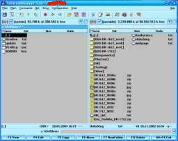
Image 5
You need three files: V148teg.exe, *.hex and update.bat. Then boot into TRUE DOS.
THE WINDOWS DOS BOX IS NOT GOOD! I used a Windows 98 installation CD to boot to DOS. Since I still have FAT32 partitions I unpacked the firmwares to the hard drive. If you have the NTFS partitions under DOS this partitions will not be visible. Make a boot floppy and copy the files onto them... For me after the boot I got something like this (Image 6):
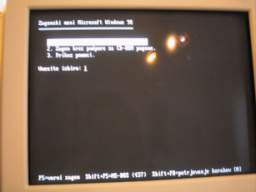
Image 6
Then I pressed SHIFT+F5 to get only command prompt so that no extra drives load. This is important since extra drivers only use extra memory wich you will need for flashing (read FAQ about Malloc error).
Then I moved to the directory where the files are (Image 7).
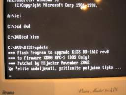
Image 7
As you can see I moved to the "c:\dvd\kiss" directory, since in Windows that is where I copied the files. If you have them on floppy then just run update.bat from the floppy (A:).
Press space or any other key and the update program will start to run. If you get a malloc error read down bellow for instructions what to do to solve it. Then it will list you IDE devices. Every IDE devices has its number. So if it's located as secundary master the number will be 2. If the program asks you where the drive is located type 2 (or any other number depending on what the list says). If it's the only CD/DVD device connected it will not ask you for the location of it. The tray will get open.
DO NOT CLOSE IT! Then the programs asks you if you want to overwrite the flash (Image 8).
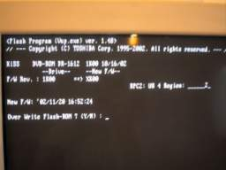
Image 8
Press Y(Yes). Flashing starts (Image 9).
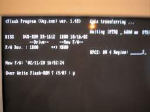
Image 9
DO NOT PRESS ANYTHING OR RESET/TURN OFF COMPUTER UNTIL IT'S DONE!
Nothing should go wrong here! I flashed over 30 Toshiba DVD drives and all are still working now. Just hope that the lightning strikes in you house and there is a power failure while flashing. I can't do anything about it :o).
When done flashing the tray will close on its own and it will display you info about the new firmware (Image 10).
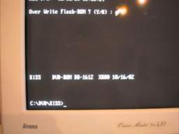
Image 10
If the new firmware has the X in it's name (ex. XK00) then falshing was a complete success. You could put the drive inside the KiSS component and try it but my advise is to boot in windows and start DISCInfo program again. It should show the the screen as the third image shows above at point 6. (No Lock Detected).
8./ That was the hard part. The Toshiba drive is region free and it will ALLWAYS stay region free! Now lets put it back inside the KiSS component. Again I would advise to open the tray and shut the computer down with tray open. This will make it easy to attach the tray cover back on.
So disconnect the drive from PC and lets put it back inside the KiSS player. You can start with the screws and the metal plate on the left and right side of the Toshiba drive. Then slide it inside with tray sticking out of the hole. Attach the tray cover back on. Also note the little brown metal sticking out of the front PCB circuit (for display and front cover keys). The reason why it's there is to ground the PCB. So make it connect to the right side of the Tosh drive. Then put the four screws at the bottom back on. The drive should be back inside now attached the same as before. Now plug back the power and the IDE cable. At last put back the black top cover. Component should now be assembled back together and working. When powered on the tray should close first if it was still open.
It will play the DVD like it was before but not all regions yet! You need to fool the software now.
9./ The KiSS guys made your life much easier with possibility to unlock the software and you should be really gratefull since not all manufacturers give this option to the users. To unlock it completely, press the folowing combination on your KiSS remote control:
(Open - Clear - 2 - 7 - 6 - Enter)
This will enable another menu where you can choose the regions and of course there you can choose the All option wich means play them ALL (Image 11)!
Note that this only works if the Toshiba is allready region free. It will not work if the software reads from the drive that it's still RPC-2!
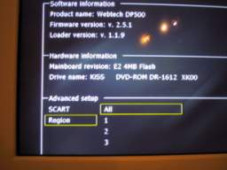
Image 11
Possible problems:
-
DISCInfo program doesn't run
o Install ASPI layer drivers
-
The Toshiba drive freezes when you try to play the movie
o The drive region was not set before flashing. Flash back to original firmware set a drives region by playing a movie and reflash back to patched firmware
-
Will the KiSS component work any diffrently after I flash it?
o The patched firmware will in no way malfunction your drive or even the whole component. It will work as it worked before the flash, except that now it will be region free
-
When I run update.bat I get a malloc error
o This error happens if you do not have enough convention memory avaible (doesn't have any relation to RAM). Billy from M$ said that 640k will be enough so don't complain to me :p. To fix this, boot the computer without any drivers. Just delete config.sys and autoexec from the boot floppy or if you have a Windows 98 boot disk press F8 just before it's start booting and choose safe mode with command prompt. You can also try to press F5 wich will bypass config.sys and autoexec.bat (windows 98 only). If you use boot disk that
>NIL: made then on bootup when it shows you a menu choose Minimal boot.
-
I flashed the component with older/newer firmware and now it's dead?
o I've got one report from a guy who flashed from 2.6.1 to 2.5.1 and the component was dead after the flash. He couldn't eject the drive and none of the buttons were working.
We solved it like so:
1. First we need to put a boot CD inside the Toshiba drive again. Since we can't eject it we need to put it out again and connect it to PC. From there open it and put a CD with firmware inside it. Check again if you burned the CD correctly. Read the instructions again carefully on the KiSS homepage (Disc-At-Once and finalise it). You can also try the procedure I wrote one line under this one. Report me back it you could open the Toshiba drive with it.
2. Connect it back in the component with firmware CD still inside. Then Power On the component.
3. Wait at least 5 minutes. You should see the usualy boot screen in this time.
4. Choose FULL UPDATE.
5. When finished Power Off and Power On again.
6. It's ALIVE!!! It's ALIVE!!! d:o)
This process should also work if there is a power failure during the flash... At least I hope so...
Big thanks to Paul who advised me this procedure and Morten who was the poor guy whose flashing gone wrong the first place.
-
I can't seem to eject the DVD drive due to ....!
o Power off the unit with the button. Then press and hold the Eject button on the untit (NOT ON THE REMOTE!). While still holding the eject button press the PowerOn key. Do not release the Eject button yet. Wait utill the drive ejects. Only then release the Eject button on the unit. This procedure should work from firmware version 2.5.1 on.
Conculsion:
So there you have it... A KiSS DVD Player unlocking instructions. If all went fine you should have a region free drive.
This is really important what I will say now so everyone please read this lines:
- I can't be hold reponsible for any bad firmware flashing. As I said before. If you do it correctly it will work without any problems. Just follow the instructions.
- I am NOT related to Toshiba or KiSS in anyway.
-
DO NOT email if I can make XYZ DVD Standalone component region free! I can't. My job here was to unlock Toshiba drive. Unlocking the KiSS drive was something that came with it ;o).
Credits:
- Thanks to Mr. Santa ;o)
- Thanks to Arzeno for letting me patch the Toshiba firmwares :P
- Thanks to all the KiSS users that helped me test the patched firmwares
Donations:
Go to top of the page